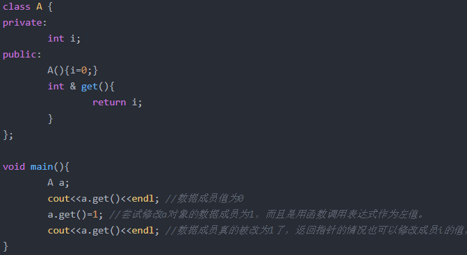

C++
1. C 和 C++ 区别
（1）c: c++从c语言的基础上发展过来
（2）面向对象
（3）Template c++：c++泛型编程
（4）STL
2. const 有什么用途
1：定义只读变量，即常量
2：修饰函数的参数和函数的返回值
3： 修饰函数的定义体，这里的函数为类的成员函数，被const修饰的成员函数代表不修改成员变量的值
4：进行类型检查


3. 指针和引用的区别
本质：一个是别名，一个是地址
1. 指针可以在运行时改变其所指向的值，引用一旦和某个对象绑定就不再改变
2. 引用没有const, 指针有const
3. 从内存上看，指针会分配内存区域，引用不会，它仅仅是一个别名
4. 在参数传递时，引用会做类型检查，而指针不会
5. 引用不能为空，指针可以为空
4. C++中有了malloc / free , 为什么还需要 new / delete
1,malloc与free是C++/C语言的标准库函数，new/delete是C++的运算符。它们都可用于申请动态内存和释放内存。
2,对于非内部数据类型的对象而言，光用maloc/free无法满足动态对象的要求。
对象在创建的同时要自动执行构造函数，对象在消亡之前要自动执行析构函数。
由于malloc/free是库函数而不是运算符，不在编译器控制权限之内，不能够把执行构造函数和析构函数的任务强加于malloc/free。
3,因此C++语言需要一个能完成动态内存分配和初始化工作的运算符new，以一个能完成清理与释放内存工作的运算符delete。注意new/delete不是库函数。
5. 编写类String 的构造函数，析构函数，拷贝构造函数和赋值函数
class String
{
public:
String(const char *str = NULL); // 构造函数
String(const String &other); // 拷贝构造函数
~String(void); //析构函数
String &operator = (const String &other); //赋值函数
private:
char *m_data; // 用于保存字符串
};
// 构造函数
String::String(const char *str)
{
if (str == NULL) // 判断是否为空
{
m_data = new char[1];
*m_data = '\0';
}
else
{
int len = strlen(str);
m_data = new char[len+1];
strcpy(m_data, str);
}
}
String::String(const String &other)
{
int len = strlen(other.m_data);
m_data = new char[len+1];
strcpy(m_data, other.m_data);
}
String & String::operator = (const String &other)
{
if (&other == this) //判断是否自我赋值
{
return this；
}
delete []m_data; //释放对象已占内存
int len = strlen(other.m_data);
m_data = new char[len+1]; // 重新分配内存
strcpy(m_data, other.m_data);
return this;
}
// 析构函数
String::~String()
{
delete []m_data;
}
6. 多态的实现
在基类的函数前加上virtual关键字，在派生类中重写该函数，运行时将会根据对象的实际类型来调用相应的函数。如果对象类型是派生类，就调用派生类的函数；如果对象类型是基类，就调用基类的函数。
1：用virtual关键字申明的函数叫做虚函数，虚函数肯定是类的成员函数。
2：存在虚函数的类都有一个一维的虚函数表叫做虚表，类的对象有一个指向虚表开始的虚指针。虚表是和类对应的，虚表指针是和对象对应的。
3：多态性是一个接口多种实现，是面向对象的核心，分为类的多态性和函数的多态性。
4：多态用虚函数来实现，结合动态绑定.
5:纯虚函数是虚函数再加上 = 0；
6：抽象类是指包括至少一个纯虚函数的类。
7. 单链表的逆置
struct node
{
int data;
node* next;
};
void reverseList(node* pHead)
{
if(pHead=NULL || pHead->next==NULL)
return;
node* pPre=pHead;
node* pCur=pPre->next;
node* pNext=NULL;
while(pCur)
{
pNext=pCur->next;
pCur->next=pPre;
pPre=pCur;
pCur=pNext;
}
pHead->next=NULL;
pHead=pPre;
}
ListNode* ReverseList(ListNode* pHead)
{
if (pHead->next == nullptr || pHead == nullptr)
return pHead;
ListNode* pReverse = ReverseList(pHead->next);
pHead->next->next = pHead;
pHead->next = nullptr;
return pReverse;
}
8. 堆和栈的区别
1、栈区（stack）― 由编译器自动分配释放 ，存放函数的参数值，局部变量的值等。其操作方式类似于数据结构中的栈。
2、堆区（heap） ― 一般由程序员分配释放， 若程序员不释放，程序结束时可能由OS回收 。
注意它与数据结构中的堆是两回事，分配方式倒是类似于链表，呵呵。
3、全局区（静态区）（static）―，全局变量和静态变量的存储是放在一块的，
初始化的全局变量和静态变量在一块区域， 未初始化的全局变量和未初始化的静态变量在相邻的另一块区域。 - 程序结束后有系统释放
4、文字常量区 ―常量字符串就是放在这里的。 程序结束后由系统释放
5 自由存储区，就是那些由malloc等分配的内存块，他和堆是十分相似的，不过它是用free来结束自己的生命的。
9. 不调用C/C++ 的字符串库函数，编写strcpy
char* strcpy(char* strDest, char* strSrc)
{
if (strDest == NULL || strSrc == NULL)
return NULL;
char* str = strDest;
while ((*strDest++ = *strSrc++) != '\0');
*strDest = '\0';
return str;
}
10. 关键字static的作用
1. 函数体内 static 变量的作用范围为该函数体，不同于 auto 变量， 该变量的内存只被分配一次，因此其值在下次调用时仍维持上次的值
2. 在模块内的 static 全局变量可以被模块内所有函数访问，但不能被模块外其他函数访问
3. 在模块内的static 函数只可被这一模块内的其他函数调用，这个函数的使用范围被限制在声明它的模块内
4. 在类的static 成员变量属于整个类所拥有，对类的所以对象只有一份拷贝
5. 在类中的 static 成员函数属于整个类所拥有，这个函数不接收 this 指针，因而只能访问类的 static 成员变量
11. 在c++程序中调用被C编译器编译后的函数，为什么要加extern“C”
假设某个函数原型为：void foo(int x, inty);
该函数被C编译器编译后在库中的名字为: _foo ,而C++编译器则会产生像: _foo_int_int 之类的名字。
为了解决此类名字匹配的问题，C++提供了C链接交换指定符号 extern "C"。
12. 静态链表和动态链表的区别
1、静态链表是用类似于数组方法实现的，是顺序的存储结构，在物理地址上是连续的，而且需要预先分配地址空间大小。所以静态链表的初始长度一般是固定的，在做插入和删除操作时不需要移动元素，仅需修改指针。
2、动态链表是用内存申请函数（malloc/new）动态申请内存的，所以在链表的长度上没有限制。动态链表因为是动态申请内存的，所以每个节点的物理地址不连续，要通过指针来顺序访问。
13.四种最短路径算法
14. STL库用过吗？常见的STL容器有哪些？算法用过哪几个？
答：STL包括两部分内容：容器和算法。（重要的还有融合这二者的迭代器）
容器，即存放数据的地方。比如array等。
在STL中，容器分为两类：序列式容器和关联式容器。
序列式容器，其中的元素不一定有序，但都可以被排序。如：vector、list、deque、stack、queue、heap、priority_queue、slist；
关联式容器，内部结构基本上是一颗平衡二叉树。所谓关联，指每个元素都有一个键值和一个实值，元素按照一定的规则存放。如：RB-tree、set、map、multiset、multimap、hashtable、hash_set、hash_map、hash_multiset、hash_multimap。
下面各选取一个作为说明。
vector：它是一个动态分配存储空间的容器。区别于c++中的array，array分配的空间是静态的，分配之后不能被改变，而vector会自动重分配（扩展）空间。
set：其内部元素会根据元素的键值自动被排序。区别于map，它的键值就是实值，而map可以同时拥有不同的键值和实值。
算法，如排序，复制……以及个容器特定的算法。这点不用过多介绍，主要看下面迭代器的内容。
迭代器是STL的精髓，我们这样描述它：迭代器提供了一种方法，使它能够按照顺序访问某个容器所含的各个元素，但无需暴露该容器的内部结构。它将容器和算法分开，好让这二者独立设计。
15. 堆和栈的区别？堆和栈的生命周期？
一、堆栈空间分配区别：
1、栈（操作系统）：由操作系统自动分配释放 ，存放函数的参数值，局部变量的值等。其操作方式类似于数据结构中的栈；
2、堆（操作系统）： 一般由程序员分配释放， 若程序员不释放，程序结束时可能由OS回收，分配方式倒是类似于链表。
二、堆栈缓存方式区别：
1、栈使用的是一级缓存， 他们通常都是被调用时处于存储空间中，调用完毕立即释放；
2、堆是存放在二级缓存中，生命周期由虚拟机的垃圾回收算法来决定（并不是一旦成为孤儿对象就能被回收）。所以调用这些对象的速度要相对来得低一些。
三、堆栈数据结构区别：
堆（数据结构）：堆可以被看成是一棵树，如：堆排序；
栈（数据结构）：一种先进后出的数据结构。
16. 解释下封装、继承和多态？
1.一、封装：
封装是实现面向对象程序设计的第一步，封装就是将数据或函数等集合在一个个的单元中（我们称之为类）。
封装的意义在于保护或者防止代码（数据）被我们无意中破坏。
二、继承：
继承主要实现重用代码，节省开发时间。
子类可以继承父类的一些东西。
三、多态
多态：同一操作作用于不同的对象，可以有不同的解释，产生不同的执行结果。在运行时，可以通过指向基类的指针，来调用实现派生类中的方法。 简而言之就是用父类型别的指针指向其子类的实例，然后通过父类的指针调用实际子类的成员函数。
五个基本原则：
单一职责原则（Single-Resposibility Principle）：一个类，最好只做一件事，只有一个引起它的变化。单一职责原则可以看做是低耦合、高内聚在面向对象原则上的引申，将职责定义为引起变化的原因，以提高内聚性来减少引起变化的原因。
开放封闭原则（Open-Closed principle）：软件实体应该是可扩展的，而不可修改的。也就是，对扩展开放，对修改封闭的。
Liskov替换原则（Liskov-Substituion Principle）：子类必须能够替换其基类。这一思想体现为对继承机制的约束规范，只有子类能够替换基类时，才能保证系统在运行期内识别子类，这是保证继承复用的基础。
依赖倒置原则（Dependecy-Inversion Principle）：依赖于抽象。具体而言就是高层模块不依赖于底层模块，二者都同依赖于抽象；抽象不依赖于具体，具体依赖于抽象。
接口隔离原则（Interface-Segregation Principle）：使用多个小的专门的接口，而不要使用一个大的总接口。
17.转换
int string to_string();
string int atoi(string.c_str());
int char* _itoa(int,char*,10);
char* int atoi();
char* string c_str();
string *char =;
18


19 int 和float
20
头文件的作用是什么?
答：一、通过头文件来调用库功能。在很多场合，源代码不便（或不准）向用户公布，只要向用户提供头文件和二进制的库即可。用户只需要按照头文件中的接口声明来调用库功能，而不必关心接口怎么实现的。编译器会从库中提取相应的代码。
二、头文件能加强类型安全检查。如果某个接口被实现或被使用时，其方式与头文件中的声明不一致，编译器就会指出错误，这一简单的规则能大大减轻程序员调试、改错的负担。
21
对于一个频繁使用的短小函数,在C语言中应用什么实现,在C++中应用什么实现?
【标准答案】c用宏定义，c++用inline define实现的函数功能容易出bug，所以在c++中最好不要使用
22
VC中，编译工具条内的Debug与Release选项是什么含义？ 【参考答案】 Debug 通常称为调试版本，它包含调试信息，并且不作任何优化，便于程序员调试程序。 Release 称为发布版本，它往往是进行了各种优化，使得程序在代码大小和运行速度上都是最优的，以便用户很好地使用。 Debug带有大量的调试代码，运行时需要相应的运行库， 发布模式程序紧凑不含有调试代码和信息，直接可以运行（如果不需要运行库）
23
如果在申请动态内存时找不到足够大的内存块，malloc 和 new 将返回 NULL 指针，宣告内存申请失败。你是怎么处理内存耗尽的？ 【参考答案】 （1）判断指针是否为 NULL，如果是则马上用 return 语句终止本函数。 （2）判断指针是否为 NULL，如果是则马上用 exit(1)终止整个程序的运行 （3）为 new 和 malloc 设置异常处理函数。例如 Visual C++可以用_set_new_hander 函数为 new 设置用户自己定义的异常处理函数，也可以让 malloc 享用与 new 相同的异常处理函数。
24
通俗讲适配器就是以序列式容器为底层数据结构，进一步封装了的为适应场景应用的容器。STL中提供了三种适配器，分别为stack，queue和priority_queue。
25
构造函数不能声明为虚函数，析构函数可以声明为虚函数，而且有时是必须声明为虚函数。
构造函数不能声明为虚函数的原因是:
1 构造一个对象的时候，必须知道对象的实际类型，而虚函数行为是在运行期间确定实际类型的。而在构造一个对象时，由于对象还未构造成功。编译器无法知道对象 的实际类型，是该类本身，还是该类的一个派生类，或是更深层次的派生类。无法确定。。。
2 虚函数的执行依赖于虚函数表。而虚函数表在构造函数中进行初始化工作，即初始化vptr，让他指向正确的虚函数表。而在构造对象期间，虚函数表还没有被初 始化，将无法进行。
析构函数设为虚函数的作用:
解释：在类的继承中，如果有基类指针指向派生类，那么用基类指针delete时，如果不定义成虚函数，派生类中派生的那部分无法析构。
26
多态类中的虚函数表是Compile-Time，还是Run-Time时建立的? 【标准答案】虚拟函数表是在编译期就建立了,各个虚拟函数这时被组织成了一个虚拟函数的入口地址的数组.而对象的隐藏成员--虚拟函数表指针是在运行期--也就是构造函数被调用时进行初始化的,这是实现多态的关键。